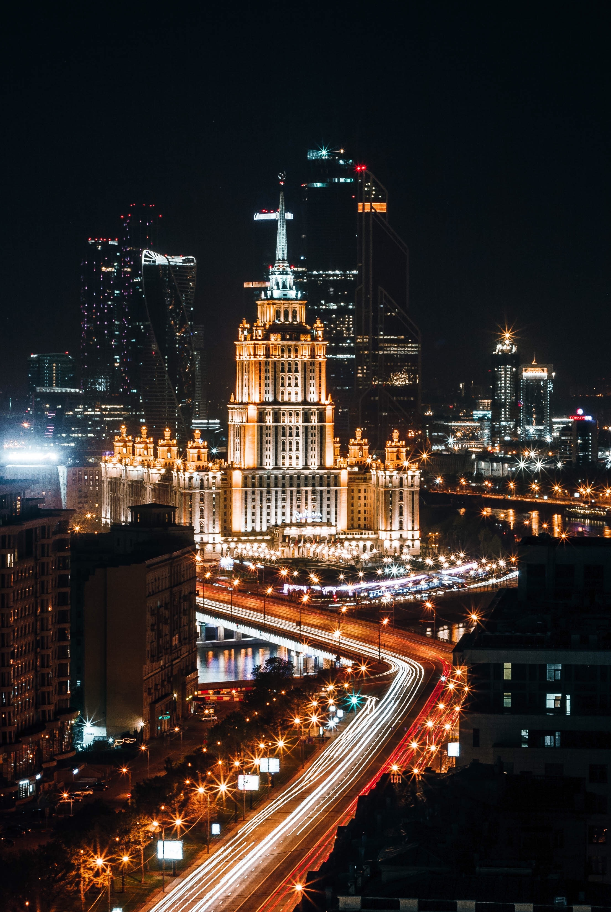
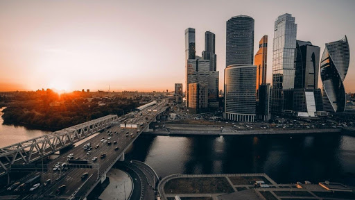
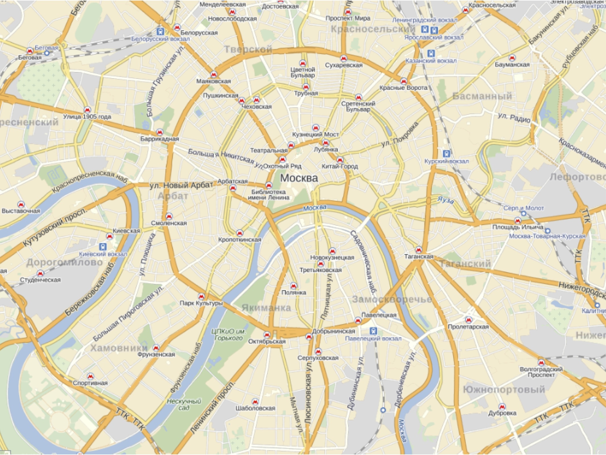

Москва

Москва́ — столица России, город федерального значения, административный центр Центрального федерального округа и центр Московской области, в состав которой не входит. Крупнейший по численности населения город России и её субъект — 12 678 079 человек (2020), самый населённый из городов, полностью расположенных в Европе, входит в десятку городов мира по численности населения, крупнейший русскоязычный город в мире. Центр Московской городской агломерации. Центр Русской православной церкви.

Историческая столица Великого княжества Московского, Русского царства, Российской империи (в 1728—1730 годах), Советской России и СССР. Город-герой. В Москве находятся федеральные органы государственной власти Российской Федерации (за исключением Конституционного суда), посольства иностранных государств, штаб-квартиры большинства крупнейших российских коммерческих организаций и общественных объединений.

Расположена на западе России, на реке Москве в центре Восточно-Европейской равнины, в междуречье Оки и Волги. Как субъект федерации, Москва граничит с Московской и Калужской областями.